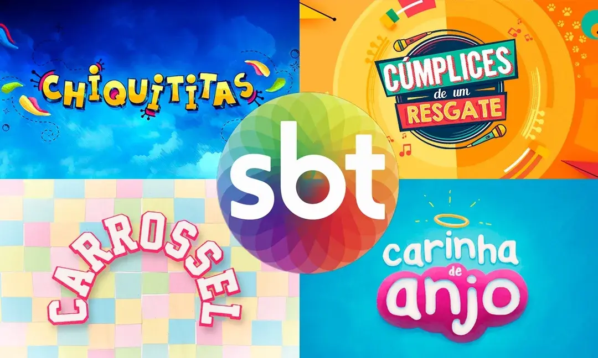
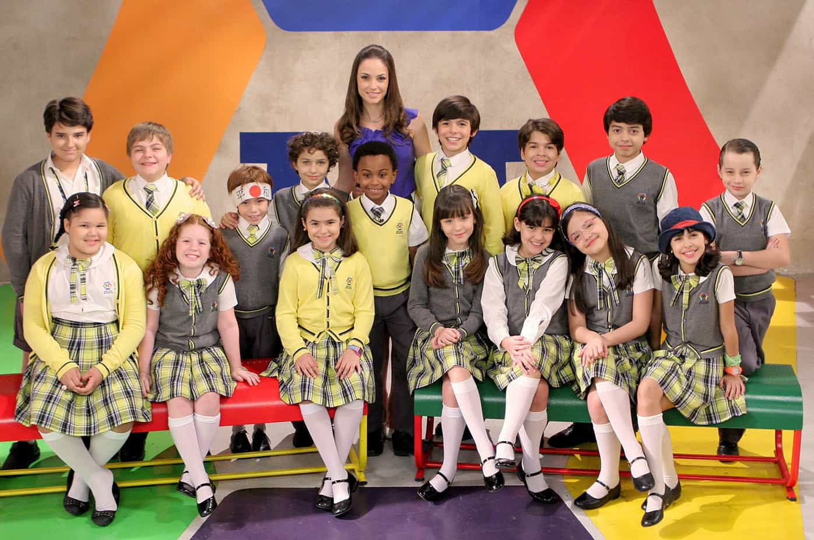

seja bem vindo
esse site foi criado para divulgar algumas novelas infantis do SBT, reunindo informações, curiosidades.Aqui fãs podem relembrar histórias, personagens e momentos que fizeram parte da infância de muita gente.

CHIQUITITAS
A história do orfanato Raio de Luz não é apenas uma novela, mas um marco na teledramaturgia infantojuvenil da América Latina. Criada originalmente na Argentina por Cris Morena em 1995, a trama chegou ao Brasil em 1997 através de uma parceria inédita entre o SBT e a emissora argentina Telefe. Gravada em Buenos Aires, a primeira versão brasileira eternizou Flávia Monteiro como a doce Carolina e serviu de vitrine para talentos que hoje são gigantes na TV, como Fernanda Souza, Bruno Gagliasso e Débora Falabella. O sucesso foi tão estrondoso que as músicas, repletas de coreografias vibrantes e letras sobre amizade e esperança, venderam milhões de discos e transformaram o elenco em verdadeiros astros pop. Quase duas décadas depois, em 2013, o SBT apostou em um remake escrito por Íris Abravanel. Com uma estética modernizada e adaptada à era digital, a nova versão manteve a essência da busca de Mili por suas origens e a união das crianças contra as vilanias de personagens como Carmen. Esta adaptação se tornou uma das produções mais longas da TV brasileira, ultrapassando os 500 capítulos, e conquistou uma nova legião de fãs, dominando por anos os rankings de audiência em plataformas de streaming como a Netflix. O que torna Chiquititas única é a sua capacidade de tratar temas sensíveis — como o abandono, a busca pela identidade e os desafios do crescimento — com leveza, música e fantasia. Seja pelo clássico grito de "Remexe!" ou pelas lições de resiliência no casarão, a marca deixou um legado de produtos licenciados, turnês musicais e uma memória afetiva que une pais, que assistiram nos anos 90, e filhos, que acompanharam as versões recentes. É uma obra que prova que, independentemente da época, a mensagem de que "o coração não tem buraquinhos" continua ressoando no público.

CARINHA DE ANJO
A história da pequena Dulce Maria é um dos pilares mais amados da teledramaturgia infantil, unindo humor, emoção e uma dose generosa de fofura. O enredo, que foca em uma menina órfã de mãe que vive em um colégio interno de freiras, teve sua versão mais famosa produzida no México pela Televisa em 2000. Protagonizada por Daniela Aedo, a novela se tornou um fenômeno internacional, sendo exportada para diversos países e marcando a infância de quem cresceu no início dos anos 2000 com a icônica figura da Tia Perucas e as conversas imaginárias de Dulce com sua mãe no "quartinho de luz". Em 2016, o SBT lançou o remake brasileiro, adaptado por Leonor Corrêa, que conseguiu atualizar a trama para a era das redes sociais sem perder a essência clássica. Nesta versão, a pequena Lorena Queiroz deu vida à protagonista, conquistando o público com seu carisma natural. Um dos grandes diferenciais do remake foi a inclusão de elementos modernos, como a personagem Juju Almeida (Maisa Silva), uma vlogueira que trazia o universo digital para dentro da história, e a presença da estrela internacional Lucero, que interpretou a mãe de Dulce Maria e gravou músicas em português especialmente para a trilha sonora. O sucesso de Carinha de Anjo reside no equilíbrio entre os dramas familiares e o alívio cômico proporcionado pelas freiras do internato, como a atrapalhada Irmã Fabiana (Karin Hils) e a rigorosa, mas justa, Madre Superiora. A novela aborda temas como o luto infantil, a reconstrução familiar e a importância do afeto, sempre sob uma ótica lúdica e esperançosa. Mesmo anos após sua exibição original, a versão brasileira continua figurando entre os conteúdos mais assistidos em plataformas de streaming, provando que a jornada de Dulce Maria para unir seu pai, Gustavo, à noviça Cecília é uma narrativa atemporal que ainda encanta novas gerações de famílias.

AS AVENTURAS DE POLIANA
Inspirada no clássico da literatura infantojuvenil Pollyanna, de Eleanor H. Porter, a novela As Aventuras de Poliana estreou no SBT em 2018 e se consolidou como um dos maiores sucessos da teledramaturgia recente da emissora. Escrita por Íris Abravanel, a trama gira em torno de Poliana (interpretada por Sophia Valverde), uma menina que, após perder os pais, vai morar em São Paulo com sua tia severa, Luísa. O coração da história é o "Jogo Contente", uma filosofia de vida ensinada pelo pai de Poliana que consiste em extrair algo positivo de todas as situações, por mais difíceis que pareçam. Diferente de outras adaptações infantis, a novela trouxe um forte componente tecnológico e moderno ao introduzir a 0110, uma empresa de games e robótica liderada pelo misterioso Sr. Pendleton. Essa mistura de drama familiar clássico com elementos de ficção científica e dilemas da era digital — como o uso de redes sociais e inteligência artificial — ajudou a cativar não apenas as crianças, mas também o público adolescente. Personagens como o rebelde Bento, a influenciadora digital Filipa e o fiel amigo João trouxeram camadas de diversidade e discussões sobre amizade e superação ao cotidiano da Escola Ruth Goulart. O impacto da novela foi tão grande que ela gerou uma continuação direta, Poliana Moça, que acompanhou o amadurecimento da protagonista e seus dilemas na adolescência, como o primeiro amor e a busca pela própria identidade. Com uma trilha sonora pop e visual colorido, a franquia Poliana quebrou recordes de visualizações no YouTube e se tornou um fenômeno de licenciamento. Mais do que entretenimento, a obra deixou um legado sobre saúde mental e resiliência, provando que a gentileza e o otimismo podem ser ferramentas poderosas para enfrentar os desafios da vida real.

CARROSSEL
Aqui está um texto consolidado sobre o fenômeno que redefiniu as novelas infantis no Brasil moderno: Carrossel: A Escola que Uniu o Brasil A novela Carrossel é um dos maiores marcos da televisão brasileira, sendo a responsável por revitalizar o gênero infantojuvenil no SBT em 2012. Baseada na obra original mexicana de 1989, a adaptação escrita por Íris Abravanel transportou o cotidiano da Escola Mundial para a realidade do século XXI. A trama, focada na convivência entre crianças de diferentes classes sociais e personalidades, gira em torno da doce Professora Helena (Rosanne Mulholland), que atua não apenas como educadora, mas como uma guia emocional para seus alunos, enfrentando a rigidez da Diretora Olívia. O grande trunfo de Carrossel foi o seu elenco mirim perfeitamente escalado, que transformou personagens arquetípicos em ícones culturais. O amor platônico e inocente de Cirilo Rivera (Jean Paulo Campos) pela arrogante Maria Joaquina (Larissa Manoela) tornou-se o fio condutor de discussões importantes sobre racismo, preconceito de classe e amadurecimento. Ao lado deles, figuras como o comilão Jaime Palillo, a romântica Laura, o travesso Paulo Guerra e o sensível Kokimoto deram vida a um mosaico de experiências que refletiam os dilemas reais das crianças brasileiras. Além do sucesso na TV, a novela se transformou em uma potência comercial e multimídia. O bordão "Isso é tão antirromântico!" e as músicas vibrantes da trilha sonora dominaram as paradas de sucesso, gerando álbuns de figurinhas, shows por todo o país e dois filmes de grande bilheteria nos cinemas. Carrossel provou que era possível fazer entretenimento de qualidade para toda a família, tratando de bullying, ética e amizade com leveza e ludicidade, deixando um legado que abriu portas para todas as outras produções infantis que vieram a seguir.

CÚMPLICES DE UM RESGATE
Baseada na obra original mexicana da Televisa, a versão brasileira de Cúmplices de um Resgate, adaptada por Íris Abravanel e estreada em 2015 no SBT, elevou o patamar das produções infantojuvenis ao misturar drama familiar com o universo das bandas de garagem. A história gira em torno das irmãs gêmeas Manuela e Isabela (interpretadas por Larissa Manoela), que foram separadas no nascimento. Enquanto Manuela cresceu em um vilarejo pacato com sua mãe biológica, cercada de amor e música sertaneja, Isabela foi criada em um ambiente de luxo e frieza por Regina, a vilã que a roubou na maternidade para garantir uma herança. O grande motor da trama é a troca de lugares entre as irmãs: Isabela, que sonha em ser uma estrela mas não tem talento vocal, obriga a doce Manuela, que canta como um anjo, a assumir sua identidade nas audições da gravadora Do-Ré-Music. Essa dinâmica gera situações de suspense, humor e muita emoção, especialmente quando elas precisam esconder o segredo de todos ao redor. A novela também se destacou pela formação da banda C1R, que saiu das telas para a vida real, realizando turnês por todo o Brasil e arrastando multidões com sucessos como "Pra Ver se Cola" e "Superstar". O diferencial de Cúmplices foi a habilidade de Larissa Manoela em dar personalidades distintas a cada gêmea, tornando-as ícones da cultura pop infantil da época. Além disso, a novela abordou a união entre as crianças do vilarejo e as da cidade, mostrando que a amizade e a música podem superar barreiras sociais. Com um visual moderno, clipes musicais de alta produção e um enredo cheio de reviravoltas, a obra se tornou um dos maiores sucessos de audiência e licenciamento da emissora, mantendo-se viva até hoje através de reprises e do catálogo de plataformas de streaming.

POLIANA MOÇA
Lançada em 2022 pelo SBT, Poliana Moça deu continuidade ao universo de As Aventuras de Poliana, adaptando o segundo livro de Eleanor H. Porter para a realidade contemporânea brasileira. A trama salta no tempo para mostrar a protagonista, novamente vivida por Sophia Valverde, prestes a completar 15 anos. Se na primeira fase o foco era a introdução do "Jogo Contente" e a adaptação à nova família, nesta sequência o enredo mergulha profundamente nos dilemas da adolescência, como o primeiro amor, a busca pela autonomia e as complexas pressões das redes sociais. O grande motor dramático da novela é o triângulo amoroso formado por Poliana, João e Eric, que dividiu o público e trouxe uma pegada mais romântica e emocional à história. Enquanto Poliana tenta manter seu otimismo característico, ela descobre que o mundo adulto exige mais do que apenas ver o lado bom das coisas; exige escolhas difíceis e resiliência diante de corações partidos e decepções. Paralelamente, a trama expandiu seu núcleo tecnológico com o surgimento de Pinóquio, um boneco que ganha vida através de inteligência artificial, levantando discussões lúdicas e filosóficas sobre o que significa ser humano. Com uma produção visual mais sofisticada e uma trilha sonora voltada para o público teen, a novela consolidou a franquia como um dos maiores produtos transmídia da TV brasileira, gerando milhões de interações em plataformas digitais e culminando em um longa-metragem para o cinema. Poliana Moça encerrou um ciclo de cinco anos da personagem no ar, deixando um legado sobre a importância de crescer sem perder a essência e provando que, mesmo com os dramas da idade, o otimismo continua sendo uma bússola necessária para navegar a vida.